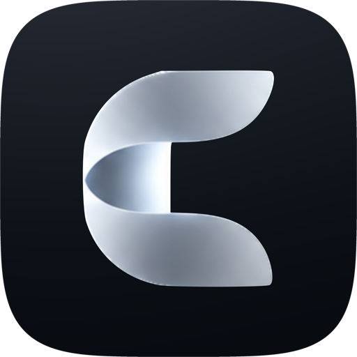

Nada se recopila por sí solo
Emura no tiene cuentas, analíticas, publicidad ni seguimiento. No nos envía nada por sí sola: lo único que nos llega es un informe de problema o un correo electrónico, cuando decides enviarlo. Tus juegos, partidas guardadas, estados guardados, ajustes y tiempo de juego se quedan en tu dispositivo y, si apoyas Emura, en tu propia cuenta de iCloud.
iCloud
Si apoyas Emura, tus partidas guardadas, estados guardados, perfiles y ajustes de la consola (propietario, personajes, monedas) se sincronizan a través de tu propia cuenta de iCloud, para que tus otros dispositivos también los tengan. Se almacenan en tu almacenamiento de iCloud, privado para tu cuenta de Apple: nosotros no podemos verlos. Emura nunca sube tus juegos en sí. (Si la copia de seguridad en iCloud de tu dispositivo está activada, incluye los archivos de Emura como los de cualquier app, juegos incluidos).
La sincronización se produce cuando abres Emura, cuando sales de ella y cuando termina un juego. Cuando sustituye o elimina una partida guardada, Emura conserva la copia anterior en tu dispositivo durante 30 días. Si cierras sesión en iCloud, todas las partidas guardadas se quedan en tu dispositivo. Puedes eliminar los datos de Emura de tu almacenamiento de iCloud en los ajustes de iCloud de tu dispositivo.
Para cada jugador, apoye o no la app, Emura guarda la identidad de tu consola (un número aleatorio creado una vez, que usan los juegos de 3DS) en tu Llavero de iCloud, para que al reinstalar o en un dispositivo nuevo conserves la misma consola. Nunca sale de tu cuenta de Apple.
Imágenes de los juegos
Para mostrar las cajas y las pantallas de tus juegos, Emura las pide por internet. Estas solicitudes solo llevan lo necesario para encontrar la imagen: nunca tus juegos en sí ni tus partidas guardadas. Cada una nombra un juego, así que un servicio puede saber qué juegos buscas.
- Las cajas, pantallas de título y capturas proceden de libretro-thumbnails. Emura las pide por el nombre y la región del juego.
- Las descripciones de los juegos de DS y 3DS proceden de GameTDB. Emura descarga su lista de juegos para tu idioma y conserva solo las descripciones de tus propios juegos: GameTDB no sabe qué juegos tienes.
- SteamGridDB, solo si añades tu propia clave de SteamGridDB en Ajustes › Imágenes: Emura pide fondos y logotipos por el nombre del juego, con tu clave. Tu clave se queda en tu Llavero de iCloud y solo se envía a SteamGridDB, que puede relacionar con tu clave los juegos que buscas. La política de privacidad de SteamGridDB se aplica a ello.
Como cualquier sitio web que visitas, estos servicios ven la dirección de internet de tu dispositivo cuando Emura les pide algo. Los demás datos de los juegos (desarrollador, año, jugadores) están dentro de la app: consultarlos no envía nada.
Permisos
Emura solo pide un permiso cuando un juego lo necesita, y solo lo usa en tu dispositivo.
- Movimiento y forma física: tu número de pasos, convertido en las monedas que usan algunos juegos de 3DS.
- Cámara: mientras un juego usa la cámara de la consola, por ejemplo para hacer una foto. Lo que ve la cámara no se guarda, salvo las fotos que hace el propio juego: esas se quedan con las partidas guardadas del juego (y se sincronizan con ellas si apoyas Emura) y se añaden a tu fototeca. Nunca se nos envían.
- Micrófono: solo mientras un juego lo pide. El sonido no se graba ni se envía.
- Fotos (solo añadir): para guardar en tu fototeca tus capturas de pantalla y las fotos que hacen los juegos. Emura no puede ver tus fotos.
- Notificaciones: recordatorios creados en tu dispositivo, como el que llega antes de que termine una prueba gratis.
Compras
Apple gestiona las suscripciones a través del App Store. No recibimos ningún dato de pago. La política de privacidad de Apple se aplica a ellas.
Menores
Emura no recopila datos por sí sola de nadie, menores incluidos. Si tienes menos de 13 años (menos de 15 en Francia), pide permiso a tu madre, padre o tutor antes de escribirnos o enviar un informe. Si sabemos que un menor nos ha enviado algo, lo eliminamos.
Informes de problemas
Un informe solo se crea cuando eliges Informar de un problema en un juego, y solo va adonde tú lo envías (por Mail o AirDrop). Contiene los últimos 30 a 60 segundos de juego (un estado guardado y los botones que pulsaste), la partida guardada de ese juego, la fluidez con la que iba el juego, las pantallas tal como estaban, el modelo de tu dispositivo, su chip gráfico, su memoria y la versión del sistema, su idioma, su zona horaria y si estaba cargando, la versión de Emura, una huella del archivo del juego (identifica el juego, no a ti), la nota que escribas y los informes de cierres inesperados o bloqueos que tu dispositivo haya generado para Emura esa semana (datos técnicos, nada personal). Fuera de eso, esos informes se quedan en tu dispositivo. Nunca contiene tu juego, tus partidas guardadas de otros juegos ni la carpeta de fotos que guardan los juegos, pero las pantallas y el estado guardado muestran lo que mostraba el juego en ese momento, que puede ser una foto. El estado guardado y la partida guardada incluyen los nombres que usas en el juego.
Usamos un informe solo para encontrar y solucionar el problema: los informes del mismo problema se agrupan y se solucionan juntos lo antes posible, y cada uno se elimina en cuanto su problema está solucionado. Los que queden se eliminan como máximo a los 12 meses. Pídenoslo en emura.support@icloud.com y eliminaremos el tuyo antes. La copia creada en tu dispositivo está en un almacenamiento temporal que el sistema vacía, y Emura elimina los informes anteriores cuando creas uno nuevo.
Cuando te pones en contacto con nosotros
Un correo que nos envías solo se conserva para responderlo, y se elimina como máximo 12 meses después de nuestro último intercambio. Los informes en GitHub y las publicaciones en r/EmuraApp son públicos, y están cubiertos por la declaración de privacidad de GitHub y la política de privacidad de Reddit: no incluyas en ellos nada privado.
De Apple
Si lo permites en los ajustes de tu dispositivo (Compartir con desarrolladores de apps), Apple nos envía informes de cierres inesperados y de rendimiento de Emura. Son técnicos y no te identifican. Se les aplica la política de privacidad de Apple.
Este sitio web
emuraapp.com está alojado en GitHub Pages, que registra las direcciones de internet de los visitantes por seguridad (declaración de privacidad de GitHub). El sitio no usa cookies, no tiene analíticas y no carga nada de otros sitios. Tu elección de aspecto claro u oscuro se guarda en tu propio navegador.
Quiénes somos y por qué podemos usar tus datos
Emura la hace Nicolas Vanardois, empresario individual en Francia, responsable de los datos descritos aquí. Contacto: emura.support@icloud.com.
- Correos e informes: para responderte y solucionar el problema que enviaste, interés legítimo nuestro y tuyo (RGPD, artículo 6.1.f).
- Sincronización con iCloud para quienes apoyan: para prestar la suscripción que elegiste (artículo 6.1.b). Funciona en tu propia cuenta de iCloud.
- Registros del sitio web: los de GitHub, para la seguridad del sitio (artículo 6.1.f).
Nuestro correo funciona con iCloud Mail de Apple, y el sitio web con GitHub. Ambas son empresas estadounidenses certificadas en el Marco de Privacidad de Datos UE-EE. UU., que cubre los datos que guardan en Estados Unidos.
Tus derechos
Puedes pedirnos acceder a lo que tenemos sobre ti (correos, informes), rectificarlo o suprimirlo, limitar su uso, oponerte a él o recibir una copia. Escribe a emura.support@icloud.com. Respondemos en un plazo de un mes. Si crees que nos equivocamos, puedes reclamar ante la CNIL, la autoridad francesa de protección de datos (cnil.fr), o ante la autoridad del país donde vives. Si vives en Brasil, tienes los mismos derechos según la LGPD, respondemos en un plazo de 15 días y también puedes reclamar ante la ANPD (gov.br/anpd).
Cambios
Si una versión futura cambia algo de esto, esta página lo indicará antes de que esa versión se publique.

Contacto
emura.support@icloud.com